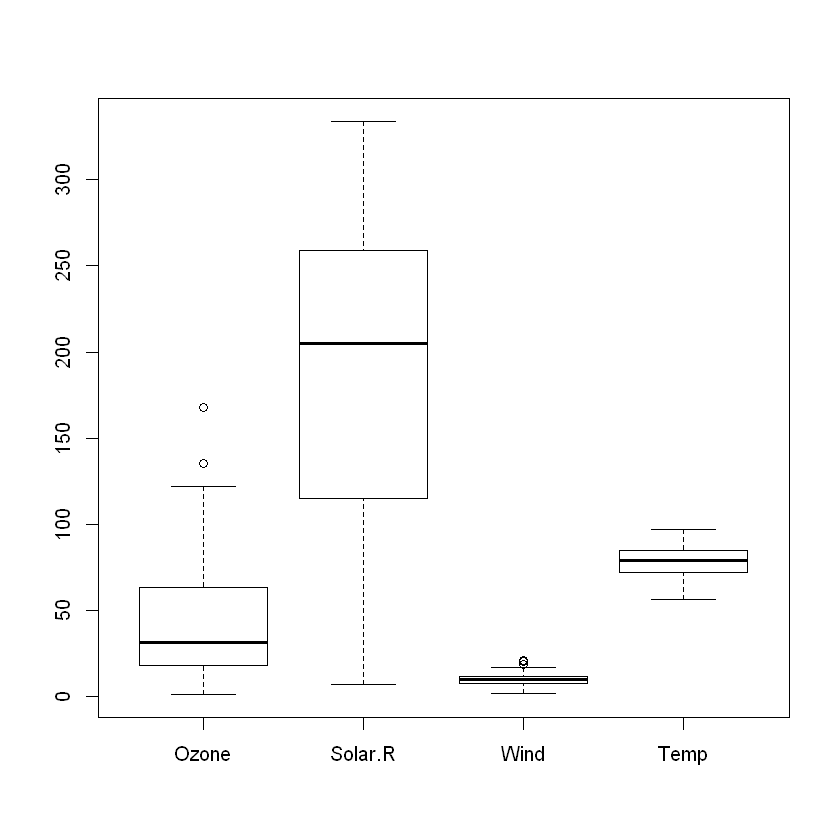
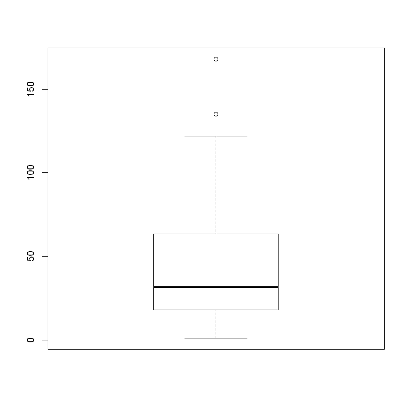
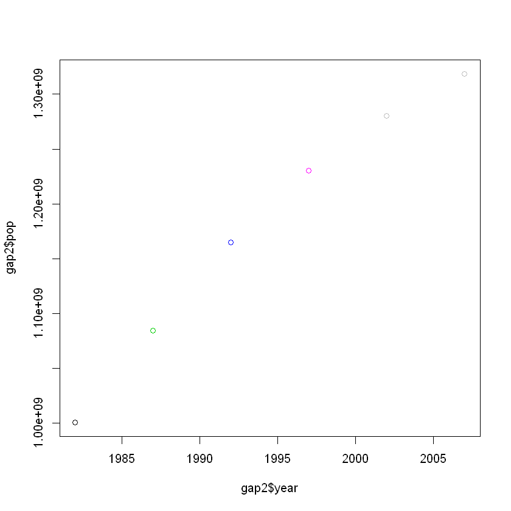
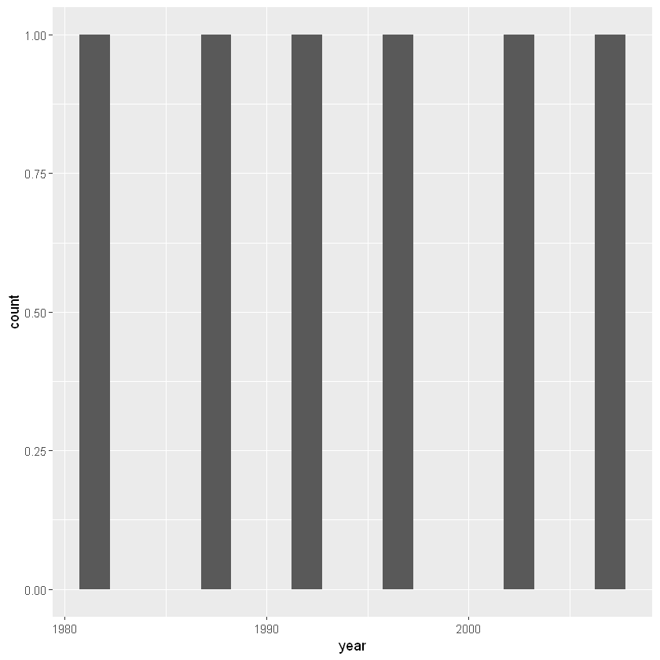

빅데이터 시각화 중간고사 대비 정리 2
빅데이터 시각화 중간고사 대비 정리하기 2
str(airquality) # airquality 데이터의 구조를 살펴봄.
'data.frame': 153 obs. of 6 variables:
$ Ozone : int 41 36 12 18 NA 28 23 19 8 NA ...
$ Solar.R: int 190 118 149 313 NA NA 299 99 19 194 ...
$ Wind : num 7.4 8 12.6 11.5 14.3 14.9 8.6 13.8 20.1 8.6 ...
$ Temp : int 67 72 74 62 56 66 65 59 61 69 ...
$ Month : int 5 5 5 5 5 5 5 5 5 5 ...
$ Day : int 1 2 3 4 5 6 7 8 9 10 ...
# na.omit 함수를 이용해 결측값 처리하기
air_narm1 = na.omit(airquality)
mean(air_narm1$Ozone)
42.0990990990991
# 함수 속성인 na.rm을 이용해 결측값 처리하기
mean(airquality$Ozone, na.rm = T)
42.1293103448276
table(is.na(airquality))
table(is.na(airquality$Ozone))
table(is.na(airquality$Solar.R))
FALSE TRUE
874 44
FALSE TRUE
116 37
FALSE TRUE
146 7
air_narm = airquality[!is.na(airquality$Ozone) & !is.na(airquality$Solar.R), ]
mean(air_narm$Ozone)
42.0990990990991
# 05 데이터 정제 예제 2 : 이상값 처리 #
# 이상값이 포함된 환자 데이터
patients = data.frame(name = c("환자1", "환자2", "환자3", "환자4", "환자5"), age = c(22, 20, 25, 30, 27), gender=factor(c("M", "F", "M", "K", "F")), blood.type = factor(c("A", "O", "B", "AB", "C")))
patients
| name | age | gender | blood.type |
|---|---|---|---|
| 환자1 | 22 | M | A |
| 환자2 | 20 | F | O |
| 환자3 | 25 | M | B |
| 환자4 | 30 | K | AB |
| 환자5 | 27 | F | C |
# 성별에서 이상값 제거
patients_outrm = patients[patients$gender=="M"|patients$gender=="F", ]
patients_outrm
| name | age | gender | blood.type | |
|---|---|---|---|---|
| 1 | 환자1 | 22 | M | A |
| 2 | 환자2 | 20 | F | O |
| 3 | 환자3 | 25 | M | B |
| 5 | 환자5 | 27 | F | C |
# 성별과 혈액형에서 이상값 제거
patients_outrm1 = patients[(patients$gender == "M"|patients$gender == "F") & (patients$blood.type == "A"|patients$blood.type == "B"|patients$blood.type == "O"|patients$blood.type == "AB"), ]
patients_outrm1
| name | age | gender | blood.type |
|---|---|---|---|
| 환자1 | 22 | M | A |
| 환자2 | 20 | F | O |
| 환자3 | 25 | M | B |
# 이상값이 포함된 환자 데이터
patients = data.frame(name = c("환자1", "환자2", "환자3", "환자4", "환자5"), age = c(22, 20, 25, 30, 27), gender = c(1, 2, 1, 3, 2), blood.type = c(1, 3, 2, 4, 5))
patients
| name | age | gender | blood.type |
|---|---|---|---|
| 환자1 | 22 | 1 | 1 |
| 환자2 | 20 | 2 | 3 |
| 환자3 | 25 | 1 | 2 |
| 환자4 | 30 | 3 | 4 |
| 환자5 | 27 | 2 | 5 |
# 성별에 있는 이상값을 결측값으로 변경
patients$gender = ifelse((patients$gender<1|patients$gender>2), NA, patients$gender)
patients
| name | age | gender | blood.type |
|---|---|---|---|
| 환자1 | 22 | 1 | 1 |
| 환자2 | 20 | 2 | 3 |
| 환자3 | 25 | 1 | 2 |
| 환자4 | 30 | NA | 4 |
| 환자5 | 27 | 2 | 5 |
# 형액형에 있는 이상값도 결측값으로 변경
patients$blood.type = ifelse((patients$blood.type<1|patients$blood.type>4), NA, patients$blood.type)
patients
| name | age | gender | blood.type |
|---|---|---|---|
| 환자1 | 22 | 1 | 1 |
| 환자2 | 20 | 2 | 3 |
| 환자3 | 25 | 1 | 2 |
| 환자4 | 30 | NA | 4 |
| 환자5 | 27 | 2 | NA |
# 결측값을 모두 제거
patients[!is.na(patients$gender)&!is.na(patients$blood.type), ]
| name | age | gender | blood.type |
|---|---|---|---|
| 환자1 | 22 | 1 | 1 |
| 환자2 | 20 | 2 | 3 |
| 환자3 | 25 | 1 | 2 |
boxplot(airquality[, c(1:4)]) # Ozone, Solar.R, Wind, Temp에 대한 boxplot

boxplot(airquality[, c(1:4)])$stats # Ozone, Solar.R, Wind, Temp에 대한 boxplot
| 1.0 | 7 | 1.7 | 56 |
| 18.0 | 115 | 7.4 | 72 |
| 31.5 | 205 | 9.7 | 79 |
| 63.5 | 259 | 11.5 | 85 |
| 122.0 | 334 | 16.6 | 97 |

boxplot(airquality[, 1])$stats # Ozone의 boxplot 통계값 계산
<ol class=list-inline> <li>1</li> <li>18</li> <li>31.5</li> <li>63.5</li> <li>122</li> </ol>

air = airquality # 임시 저장 변수로 airquality 데이터 복사
table(is.na(air$Ozone)) # Ozone의 현재 NA 개수 확인
FALSE TRUE
116 37
# 이상값을 NA로 변경
air$Ozone = ifelse(air$Ozone<1|air$Ozone>122, NA, air$Ozone)
table(is.na(air$Ozone)) # 이상값 처리 후 NA 개수 확인(2개 증가)
FALSE TRUE
114 39
# NA 제거
air_narm = air[!is.na(air$Ozone), ]
mean(air_narm$Ozone) # 이상값 두 개 제거로 is.na 함수를 이용한 결과보다 값이 줄어듦
40.2105263157895
#gapminder data가공
install.packages("gapminder")
library(gapminder)
gap1= gapminder[gapminder$country=='China',c('country','year','lifeExp','pop')]
gap2 =gap1[gap1$year>1980,]
gap2
Warning message:
"package 'gapminder' is in use and will not be installed"
| country | year | lifeExp | pop |
|---|---|---|---|
| China | 1982 | 65.525 | 1000281000 |
| China | 1987 | 67.274 | 1084035000 |
| China | 1992 | 68.690 | 1164970000 |
| China | 1997 | 70.426 | 1230075000 |
| China | 2002 | 72.028 | 1280400000 |
| China | 2007 | 72.961 | 1318683096 |
plot(gap2$year,gap2$pop,col=gap2$lifeExp)

install.packages("ggplot2")
library(ggplot2)
install.packages("dplyr")
library(dplyr)
gap2%>%ggplot(aes(year))+geom_histogram(binwidth=1.5);
There is a binary version available but the source version is later:
binary source needs_compilation
ggplot2 3.3.3 3.3.5 FALSE
installing the source package 'ggplot2'
also installing the dependencies 'glue', 'tibble', 'tidyselect'
There are binary versions available but the source versions are later:
binary source needs_compilation
tibble 3.1.1 3.1.5 TRUE
dplyr 1.0.6 1.0.7 TRUE
Binaries will be installed
Warning message:
"package 'dplyr' is in use and will not be installed"
package 'glue' successfully unpacked and MD5 sums checked
Warning message:
"cannot remove prior installation of package 'glue'"Warning message in file.copy(savedcopy, lib, recursive = TRUE):
"C:\Users\MyCom\anaconda3\Lib\R\library\00LOCK\glue\libs\x64\glue.dll를 C:\Users\MyCom\anaconda3\Lib\R\library\glue\libs\x64\glue.dll로 복사하는데 문제가 발생했습니다: Permission denied"Warning message:
"restored 'glue'"
package 'tibble' successfully unpacked and MD5 sums checked
Warning message:
"cannot remove prior installation of package 'tibble'"Warning message in file.copy(savedcopy, lib, recursive = TRUE):
"C:\Users\MyCom\anaconda3\Lib\R\library\00LOCK\tibble\libs\x64\tibble.dll를 C:\Users\MyCom\anaconda3\Lib\R\library\tibble\libs\x64\tibble.dll로 복사하는데 문제가 발생했습니다: Permission denied"Warning message:
"restored 'tibble'"
package 'tidyselect' successfully unpacked and MD5 sums checked
Warning message:
"cannot remove prior installation of package 'tidyselect'"Warning message in file.copy(savedcopy, lib, recursive = TRUE):
"C:\Users\MyCom\anaconda3\Lib\R\library\00LOCK\tidyselect\libs\x64\tidyselect.dll를 C:\Users\MyCom\anaconda3\Lib\R\library\tidyselect\libs\x64\tidyselect.dll로 복사하는데 문제가 발생했습니다: Permission denied"Warning message:
"restored 'tidyselect'"
The downloaded binary packages are in
C:\Users\MyCom\AppData\Local\Temp\RtmpAByUJq\downloaded_packages

#연습문제 2.4
#y=2x2 + 5x + 10
#x가 6,8,10일때 y의 값을 구하라
x<-c(6,8,10)
y<-2*(x^2)+5*x+10
y
<ol class=list-inline> <li>112</li> <li>178</li> <li>260</li> </ol>
#2.7
#100~200사이의 짝수로 구성된 벡터 vc.2를 생성 하고 vc.2의 내용을 출력하라
vc.2 <- seq(100,200,2)
vc.2
vc.2<-100:200
vc.2<-vc.2[vc.2%%2==0]
vc.2
<ol class=list-inline> <li>100</li> <li>102</li> <li>104</li> <li>106</li> <li>108</li> <li>110</li> <li>112</li> <li>114</li> <li>116</li> <li>118</li> <li>120</li> <li>122</li> <li>124</li> <li>126</li> <li>128</li> <li>130</li> <li>132</li> <li>134</li> <li>136</li> <li>138</li> <li>140</li> <li>142</li> <li>144</li> <li>146</li> <li>148</li> <li>150</li> <li>152</li> <li>154</li> <li>156</li> <li>158</li> <li>160</li> <li>162</li> <li>164</li> <li>166</li> <li>168</li> <li>170</li> <li>172</li> <li>174</li> <li>176</li> <li>178</li> <li>180</li> <li>182</li> <li>184</li> <li>186</li> <li>188</li> <li>190</li> <li>192</li> <li>194</li> <li>196</li> <li>198</li> <li>200</li> </ol>
<ol class=list-inline> <li>100</li> <li>102</li> <li>104</li> <li>106</li> <li>108</li> <li>110</li> <li>112</li> <li>114</li> <li>116</li> <li>118</li> <li>120</li> <li>122</li> <li>124</li> <li>126</li> <li>128</li> <li>130</li> <li>132</li> <li>134</li> <li>136</li> <li>138</li> <li>140</li> <li>142</li> <li>144</li> <li>146</li> <li>148</li> <li>150</li> <li>152</li> <li>154</li> <li>156</li> <li>158</li> <li>160</li> <li>162</li> <li>164</li> <li>166</li> <li>168</li> <li>170</li> <li>172</li> <li>174</li> <li>176</li> <li>178</li> <li>180</li> <li>182</li> <li>184</li> <li>186</li> <li>188</li> <li>190</li> <li>192</li> <li>194</li> <li>196</li> <li>198</li> <li>200</li> </ol>
#2.10
#월별 결석생 통계
#결석생 수를 값으로 하고 월이름을 값의 이름으로 한다
absent <-c(10,8,14,15,9,10,15,12,9,7,8,7)
names(absent)<-c('JAN','FEB','MAR','APR','MAY','JUN','JUL','AUG','SEP','OCT','NOV','DEC')
absent
<dl class=dl-horizontal> <dt>JAN</dt> <dd>10</dd> <dt>FEB</dt> <dd>8</dd> <dt>MAR</dt> <dd>14</dd> <dt>APR</dt> <dd>15</dd> <dt>MAY</dt> <dd>9</dd> <dt>JUN</dt> <dd>10</dd> <dt>JUL</dt> <dd>15</dd> <dt>AUG</dt> <dd>12</dd> <dt>SEP</dt> <dd>9</dd> <dt>OCT</dt> <dd>7</dd> <dt>NOV</dt> <dd>8</dd> <dt>DEC</dt> <dd>7</dd> </dl>
#5월의 결석생의 수
absent['MAY']
MAY: 9
#7월,9월 결석생의 수
absent[c('JUL','SEP')]
<dl class=dl-horizontal> <dt>JUL</dt> <dd>15</dd> <dt>SEP</dt> <dd>9</dd> </dl>
#상반기(1~6월)의 결석생 수의 합계
sum(absent[1:6])
66
#하반기(7~12월)의 결석생의 수의 평균
mean(absent[7:12])
9.66666666666667
#mtcars 데이터셋 확인
mtcars
class(mtcars)
#행의 개수와 열의 개수 확인
dim(mtcars)
| mpg | cyl | disp | hp | drat | wt | qsec | vs | am | gear | carb | |
|---|---|---|---|---|---|---|---|---|---|---|---|
| Mazda RX4 | 21.0 | 6 | 160.0 | 110 | 3.90 | 2.620 | 16.46 | 0 | 1 | 4 | 4 |
| Mazda RX4 Wag | 21.0 | 6 | 160.0 | 110 | 3.90 | 2.875 | 17.02 | 0 | 1 | 4 | 4 |
| Datsun 710 | 22.8 | 4 | 108.0 | 93 | 3.85 | 2.320 | 18.61 | 1 | 1 | 4 | 1 |
| Hornet 4 Drive | 21.4 | 6 | 258.0 | 110 | 3.08 | 3.215 | 19.44 | 1 | 0 | 3 | 1 |
| Hornet Sportabout | 18.7 | 8 | 360.0 | 175 | 3.15 | 3.440 | 17.02 | 0 | 0 | 3 | 2 |
| Valiant | 18.1 | 6 | 225.0 | 105 | 2.76 | 3.460 | 20.22 | 1 | 0 | 3 | 1 |
| Duster 360 | 14.3 | 8 | 360.0 | 245 | 3.21 | 3.570 | 15.84 | 0 | 0 | 3 | 4 |
| Merc 240D | 24.4 | 4 | 146.7 | 62 | 3.69 | 3.190 | 20.00 | 1 | 0 | 4 | 2 |
| Merc 230 | 22.8 | 4 | 140.8 | 95 | 3.92 | 3.150 | 22.90 | 1 | 0 | 4 | 2 |
| Merc 280 | 19.2 | 6 | 167.6 | 123 | 3.92 | 3.440 | 18.30 | 1 | 0 | 4 | 4 |
| Merc 280C | 17.8 | 6 | 167.6 | 123 | 3.92 | 3.440 | 18.90 | 1 | 0 | 4 | 4 |
| Merc 450SE | 16.4 | 8 | 275.8 | 180 | 3.07 | 4.070 | 17.40 | 0 | 0 | 3 | 3 |
| Merc 450SL | 17.3 | 8 | 275.8 | 180 | 3.07 | 3.730 | 17.60 | 0 | 0 | 3 | 3 |
| Merc 450SLC | 15.2 | 8 | 275.8 | 180 | 3.07 | 3.780 | 18.00 | 0 | 0 | 3 | 3 |
| Cadillac Fleetwood | 10.4 | 8 | 472.0 | 205 | 2.93 | 5.250 | 17.98 | 0 | 0 | 3 | 4 |
| Lincoln Continental | 10.4 | 8 | 460.0 | 215 | 3.00 | 5.424 | 17.82 | 0 | 0 | 3 | 4 |
| Chrysler Imperial | 14.7 | 8 | 440.0 | 230 | 3.23 | 5.345 | 17.42 | 0 | 0 | 3 | 4 |
| Fiat 128 | 32.4 | 4 | 78.7 | 66 | 4.08 | 2.200 | 19.47 | 1 | 1 | 4 | 1 |
| Honda Civic | 30.4 | 4 | 75.7 | 52 | 4.93 | 1.615 | 18.52 | 1 | 1 | 4 | 2 |
| Toyota Corolla | 33.9 | 4 | 71.1 | 65 | 4.22 | 1.835 | 19.90 | 1 | 1 | 4 | 1 |
| Toyota Corona | 21.5 | 4 | 120.1 | 97 | 3.70 | 2.465 | 20.01 | 1 | 0 | 3 | 1 |
| Dodge Challenger | 15.5 | 8 | 318.0 | 150 | 2.76 | 3.520 | 16.87 | 0 | 0 | 3 | 2 |
| AMC Javelin | 15.2 | 8 | 304.0 | 150 | 3.15 | 3.435 | 17.30 | 0 | 0 | 3 | 2 |
| Camaro Z28 | 13.3 | 8 | 350.0 | 245 | 3.73 | 3.840 | 15.41 | 0 | 0 | 3 | 4 |
| Pontiac Firebird | 19.2 | 8 | 400.0 | 175 | 3.08 | 3.845 | 17.05 | 0 | 0 | 3 | 2 |
| Fiat X1-9 | 27.3 | 4 | 79.0 | 66 | 4.08 | 1.935 | 18.90 | 1 | 1 | 4 | 1 |
| Porsche 914-2 | 26.0 | 4 | 120.3 | 91 | 4.43 | 2.140 | 16.70 | 0 | 1 | 5 | 2 |
| Lotus Europa | 30.4 | 4 | 95.1 | 113 | 3.77 | 1.513 | 16.90 | 1 | 1 | 5 | 2 |
| Ford Pantera L | 15.8 | 8 | 351.0 | 264 | 4.22 | 3.170 | 14.50 | 0 | 1 | 5 | 4 |
| Ferrari Dino | 19.7 | 6 | 145.0 | 175 | 3.62 | 2.770 | 15.50 | 0 | 1 | 5 | 6 |
| Maserati Bora | 15.0 | 8 | 301.0 | 335 | 3.54 | 3.570 | 14.60 | 0 | 1 | 5 | 8 |
| Volvo 142E | 21.4 | 4 | 121.0 | 109 | 4.11 | 2.780 | 18.60 | 1 | 1 | 4 | 2 |
‘data.frame’
<ol class=list-inline> <li>32</li> <li>11</li> </ol>
#열들의 자료형 확인
str(mtcars)
'data.frame': 32 obs. of 11 variables:
$ mpg : num 21 21 22.8 21.4 18.7 18.1 14.3 24.4 22.8 19.2 ...
$ cyl : num 6 6 4 6 8 6 8 4 4 6 ...
$ disp: num 160 160 108 258 360 ...
$ hp : num 110 110 93 110 175 105 245 62 95 123 ...
$ drat: num 3.9 3.9 3.85 3.08 3.15 2.76 3.21 3.69 3.92 3.92 ...
$ wt : num 2.62 2.88 2.32 3.21 3.44 ...
$ qsec: num 16.5 17 18.6 19.4 17 ...
$ vs : num 0 0 1 1 0 1 0 1 1 1 ...
$ am : num 1 1 1 0 0 0 0 0 0 0 ...
$ gear: num 4 4 4 3 3 3 3 4 4 4 ...
$ carb: num 4 4 1 1 2 1 4 2 2 4 ...
#도움말 확인
?mtcars
#mpg 컬럼은 어떤 데이터를 저장하고 있는가?
#mpg의 평균
mean(mtcars$mpg)
20.090625
#모든 자동차 모델의 평균 연비를 보이시오
mean(mtcars$mpg)
20.090625
#연비(mpg)가 가장 좋은 자동차 모델을 보이시오
max.mpg <- max(mtcars$mpg)
max.mpg
33.9
mtcars[mtcars$mpg==max.mpg,]
rownames(mtcars[mtcars$mpg==max.mpg,])
rownames(subset(mtcars,mpg==max.mpg))
| mpg | cyl | disp | hp | drat | wt | qsec | vs | am | gear | carb | |
|---|---|---|---|---|---|---|---|---|---|---|---|
| Toyota Corolla | 33.9 | 4 | 71.1 | 65 | 4.22 | 1.835 | 19.9 | 1 | 1 | 4 | 1 |
‘Toyota Corolla’
‘Toyota Corolla’
#Porsche 914-2의 연비(mpg)와 기어수(gear)를 보이시오
mtcars['Porsche 914-2',]
mtcars['Porsche 914-2',c('mpg','gear')]
| mpg | cyl | disp | hp | drat | wt | qsec | vs | am | gear | carb | |
|---|---|---|---|---|---|---|---|---|---|---|---|
| Porsche 914-2 | 26 | 4 | 120.3 | 91 | 4.43 | 2.14 | 16.7 | 0 | 1 | 5 | 2 |
| mpg | gear | |
|---|---|---|
| Porsche 914-2 | 26 | 5 |
#Pontiac Firebird보다 연비가 좋은 모델을 모두 보이시오
mtcars['Pontiac Firebird',]
| mpg | cyl | disp | hp | drat | wt | qsec | vs | am | gear | carb | |
|---|---|---|---|---|---|---|---|---|---|---|---|
| Pontiac Firebird | 19.2 | 8 | 400 | 175 | 3.08 | 3.845 | 17.05 | 0 | 0 | 3 | 2 |
mpg.pont <- mtcars['Pontiac Firebird','mpg']
mpg.pont
19.2
mtcars[mtcars$mpg>mpg.pont,]#생략가능
| mpg | cyl | disp | hp | drat | wt | qsec | vs | am | gear | carb | |
|---|---|---|---|---|---|---|---|---|---|---|---|
| Mazda RX4 | 21.0 | 6 | 160.0 | 110 | 3.90 | 2.620 | 16.46 | 0 | 1 | 4 | 4 |
| Mazda RX4 Wag | 21.0 | 6 | 160.0 | 110 | 3.90 | 2.875 | 17.02 | 0 | 1 | 4 | 4 |
| Datsun 710 | 22.8 | 4 | 108.0 | 93 | 3.85 | 2.320 | 18.61 | 1 | 1 | 4 | 1 |
| Hornet 4 Drive | 21.4 | 6 | 258.0 | 110 | 3.08 | 3.215 | 19.44 | 1 | 0 | 3 | 1 |
| Merc 240D | 24.4 | 4 | 146.7 | 62 | 3.69 | 3.190 | 20.00 | 1 | 0 | 4 | 2 |
| Merc 230 | 22.8 | 4 | 140.8 | 95 | 3.92 | 3.150 | 22.90 | 1 | 0 | 4 | 2 |
| Fiat 128 | 32.4 | 4 | 78.7 | 66 | 4.08 | 2.200 | 19.47 | 1 | 1 | 4 | 1 |
| Honda Civic | 30.4 | 4 | 75.7 | 52 | 4.93 | 1.615 | 18.52 | 1 | 1 | 4 | 2 |
| Toyota Corolla | 33.9 | 4 | 71.1 | 65 | 4.22 | 1.835 | 19.90 | 1 | 1 | 4 | 1 |
| Toyota Corona | 21.5 | 4 | 120.1 | 97 | 3.70 | 2.465 | 20.01 | 1 | 0 | 3 | 1 |
| Fiat X1-9 | 27.3 | 4 | 79.0 | 66 | 4.08 | 1.935 | 18.90 | 1 | 1 | 4 | 1 |
| Porsche 914-2 | 26.0 | 4 | 120.3 | 91 | 4.43 | 2.140 | 16.70 | 0 | 1 | 5 | 2 |
| Lotus Europa | 30.4 | 4 | 95.1 | 113 | 3.77 | 1.513 | 16.90 | 1 | 1 | 5 | 2 |
| Ferrari Dino | 19.7 | 6 | 145.0 | 175 | 3.62 | 2.770 | 15.50 | 0 | 1 | 5 | 6 |
| Volvo 142E | 21.4 | 4 | 121.0 | 109 | 4.11 | 2.780 | 18.60 | 1 | 1 | 4 | 2 |
#Pontiac Firebird보다 연비가 좋은 모델을 모두 보이시오(2)
df <- subset(mtcars,mpg>mpg.pont)
df
| mpg | cyl | disp | hp | drat | wt | qsec | vs | am | gear | carb | |
|---|---|---|---|---|---|---|---|---|---|---|---|
| Mazda RX4 | 21.0 | 6 | 160.0 | 110 | 3.90 | 2.620 | 16.46 | 0 | 1 | 4 | 4 |
| Mazda RX4 Wag | 21.0 | 6 | 160.0 | 110 | 3.90 | 2.875 | 17.02 | 0 | 1 | 4 | 4 |
| Datsun 710 | 22.8 | 4 | 108.0 | 93 | 3.85 | 2.320 | 18.61 | 1 | 1 | 4 | 1 |
| Hornet 4 Drive | 21.4 | 6 | 258.0 | 110 | 3.08 | 3.215 | 19.44 | 1 | 0 | 3 | 1 |
| Merc 240D | 24.4 | 4 | 146.7 | 62 | 3.69 | 3.190 | 20.00 | 1 | 0 | 4 | 2 |
| Merc 230 | 22.8 | 4 | 140.8 | 95 | 3.92 | 3.150 | 22.90 | 1 | 0 | 4 | 2 |
| Fiat 128 | 32.4 | 4 | 78.7 | 66 | 4.08 | 2.200 | 19.47 | 1 | 1 | 4 | 1 |
| Honda Civic | 30.4 | 4 | 75.7 | 52 | 4.93 | 1.615 | 18.52 | 1 | 1 | 4 | 2 |
| Toyota Corolla | 33.9 | 4 | 71.1 | 65 | 4.22 | 1.835 | 19.90 | 1 | 1 | 4 | 1 |
| Toyota Corona | 21.5 | 4 | 120.1 | 97 | 3.70 | 2.465 | 20.01 | 1 | 0 | 3 | 1 |
| Fiat X1-9 | 27.3 | 4 | 79.0 | 66 | 4.08 | 1.935 | 18.90 | 1 | 1 | 4 | 1 |
| Porsche 914-2 | 26.0 | 4 | 120.3 | 91 | 4.43 | 2.140 | 16.70 | 0 | 1 | 5 | 2 |
| Lotus Europa | 30.4 | 4 | 95.1 | 113 | 3.77 | 1.513 | 16.90 | 1 | 1 | 5 | 2 |
| Ferrari Dino | 19.7 | 6 | 145.0 | 175 | 3.62 | 2.770 | 15.50 | 0 | 1 | 5 | 6 |
| Volvo 142E | 21.4 | 4 | 121.0 | 109 | 4.11 | 2.780 | 18.60 | 1 | 1 | 4 | 2 |
rownames(df)
<ol class=list-inline> <li>‘Mazda RX4’</li> <li>‘Mazda RX4 Wag’</li> <li>‘Datsun 710’</li> <li>‘Hornet 4 Drive’</li> <li>‘Merc 240D’</li> <li>‘Merc 230’</li> <li>‘Fiat 128’</li> <li>‘Honda Civic’</li> <li>‘Toyota Corolla’</li> <li>‘Toyota Corona’</li> <li>‘Fiat X1-9’</li> <li>‘Porsche 914-2’</li> <li>‘Lotus Europa’</li> <li>‘Ferrari Dino’</li> <li>‘Volvo 142E’</li> </ol>
#gear가 4개인 모델 중 연비가 가장 낮은 모델을 보이시오
mtcars[mtcars$gear==4,]
| mpg | cyl | disp | hp | drat | wt | qsec | vs | am | gear | carb | |
|---|---|---|---|---|---|---|---|---|---|---|---|
| Mazda RX4 | 21.0 | 6 | 160.0 | 110 | 3.90 | 2.620 | 16.46 | 0 | 1 | 4 | 4 |
| Mazda RX4 Wag | 21.0 | 6 | 160.0 | 110 | 3.90 | 2.875 | 17.02 | 0 | 1 | 4 | 4 |
| Datsun 710 | 22.8 | 4 | 108.0 | 93 | 3.85 | 2.320 | 18.61 | 1 | 1 | 4 | 1 |
| Merc 240D | 24.4 | 4 | 146.7 | 62 | 3.69 | 3.190 | 20.00 | 1 | 0 | 4 | 2 |
| Merc 230 | 22.8 | 4 | 140.8 | 95 | 3.92 | 3.150 | 22.90 | 1 | 0 | 4 | 2 |
| Merc 280 | 19.2 | 6 | 167.6 | 123 | 3.92 | 3.440 | 18.30 | 1 | 0 | 4 | 4 |
| Merc 280C | 17.8 | 6 | 167.6 | 123 | 3.92 | 3.440 | 18.90 | 1 | 0 | 4 | 4 |
| Fiat 128 | 32.4 | 4 | 78.7 | 66 | 4.08 | 2.200 | 19.47 | 1 | 1 | 4 | 1 |
| Honda Civic | 30.4 | 4 | 75.7 | 52 | 4.93 | 1.615 | 18.52 | 1 | 1 | 4 | 2 |
| Toyota Corolla | 33.9 | 4 | 71.1 | 65 | 4.22 | 1.835 | 19.90 | 1 | 1 | 4 | 1 |
| Fiat X1-9 | 27.3 | 4 | 79.0 | 66 | 4.08 | 1.935 | 18.90 | 1 | 1 | 4 | 1 |
| Volvo 142E | 21.4 | 4 | 121.0 | 109 | 4.11 | 2.780 | 18.60 | 1 | 1 | 4 | 2 |
mpg.min <- min(mtcars[mtcars$gear==4,'mpg'])
mpg.min
17.8
cars <-subset(mtcars,gear==4)
cars
| mpg | cyl | disp | hp | drat | wt | qsec | vs | am | gear | carb | |
|---|---|---|---|---|---|---|---|---|---|---|---|
| Mazda RX4 | 21.0 | 6 | 160.0 | 110 | 3.90 | 2.620 | 16.46 | 0 | 1 | 4 | 4 |
| Mazda RX4 Wag | 21.0 | 6 | 160.0 | 110 | 3.90 | 2.875 | 17.02 | 0 | 1 | 4 | 4 |
| Datsun 710 | 22.8 | 4 | 108.0 | 93 | 3.85 | 2.320 | 18.61 | 1 | 1 | 4 | 1 |
| Merc 240D | 24.4 | 4 | 146.7 | 62 | 3.69 | 3.190 | 20.00 | 1 | 0 | 4 | 2 |
| Merc 230 | 22.8 | 4 | 140.8 | 95 | 3.92 | 3.150 | 22.90 | 1 | 0 | 4 | 2 |
| Merc 280 | 19.2 | 6 | 167.6 | 123 | 3.92 | 3.440 | 18.30 | 1 | 0 | 4 | 4 |
| Merc 280C | 17.8 | 6 | 167.6 | 123 | 3.92 | 3.440 | 18.90 | 1 | 0 | 4 | 4 |
| Fiat 128 | 32.4 | 4 | 78.7 | 66 | 4.08 | 2.200 | 19.47 | 1 | 1 | 4 | 1 |
| Honda Civic | 30.4 | 4 | 75.7 | 52 | 4.93 | 1.615 | 18.52 | 1 | 1 | 4 | 2 |
| Toyota Corolla | 33.9 | 4 | 71.1 | 65 | 4.22 | 1.835 | 19.90 | 1 | 1 | 4 | 1 |
| Fiat X1-9 | 27.3 | 4 | 79.0 | 66 | 4.08 | 1.935 | 18.90 | 1 | 1 | 4 | 1 |
| Volvo 142E | 21.4 | 4 | 121.0 | 109 | 4.11 | 2.780 | 18.60 | 1 | 1 | 4 | 2 |
cars.min<-subset(cars,mpg==mpg.min)
cars.min
| mpg | cyl | disp | hp | drat | wt | qsec | vs | am | gear | carb | |
|---|---|---|---|---|---|---|---|---|---|---|---|
| Merc 280C | 17.8 | 6 | 167.6 | 123 | 3.92 | 3.44 | 18.9 | 1 | 0 | 4 | 4 |
rownames(cars.min)
‘Merc 280C’
#gear의 수 종류를 보이시오
str(mtcars)
'data.frame': 32 obs. of 11 variables:
$ mpg : num 21 21 22.8 21.4 18.7 18.1 14.3 24.4 22.8 19.2 ...
$ cyl : num 6 6 4 6 8 6 8 4 4 6 ...
$ disp: num 160 160 108 258 360 ...
$ hp : num 110 110 93 110 175 105 245 62 95 123 ...
$ drat: num 3.9 3.9 3.85 3.08 3.15 2.76 3.21 3.69 3.92 3.92 ...
$ wt : num 2.62 2.88 2.32 3.21 3.44 ...
$ qsec: num 16.5 17 18.6 19.4 17 ...
$ vs : num 0 0 1 1 0 1 0 1 1 1 ...
$ am : num 1 1 1 0 0 0 0 0 0 0 ...
$ gear: num 4 4 4 3 3 3 3 4 4 4 ...
$ carb: num 4 4 1 1 2 1 4 2 2 4 ...
ft<-factor(mtcars$gear)
ft
<ol class=list-inline> <li>4</li> <li>4</li> <li>4</li> <li>3</li> <li>3</li> <li>3</li> <li>3</li> <li>4</li> <li>4</li> <li>4</li> <li>4</li> <li>3</li> <li>3</li> <li>3</li> <li>3</li> <li>3</li> <li>3</li> <li>4</li> <li>4</li> <li>4</li> <li>3</li> <li>3</li> <li>3</li> <li>3</li> <li>3</li> <li>4</li> <li>5</li> <li>5</li> <li>5</li> <li>5</li> <li>5</li> <li>4</li> </ol>
unique(mtcars$gear)
<ol class=list-inline> <li>4</li> <li>3</li> <li>5</li> </ol>
#state.x77 데이터셋
class(state.x77)
‘matrix’
df.x77 <-data.frame(state.x77)
df.x77
| Population | Income | Illiteracy | Life.Exp | Murder | HS.Grad | Frost | Area | |
|---|---|---|---|---|---|---|---|---|
| Alabama | 3615 | 3624 | 2.1 | 69.05 | 15.1 | 41.3 | 20 | 50708 |
| Alaska | 365 | 6315 | 1.5 | 69.31 | 11.3 | 66.7 | 152 | 566432 |
| Arizona | 2212 | 4530 | 1.8 | 70.55 | 7.8 | 58.1 | 15 | 113417 |
| Arkansas | 2110 | 3378 | 1.9 | 70.66 | 10.1 | 39.9 | 65 | 51945 |
| California | 21198 | 5114 | 1.1 | 71.71 | 10.3 | 62.6 | 20 | 156361 |
| Colorado | 2541 | 4884 | 0.7 | 72.06 | 6.8 | 63.9 | 166 | 103766 |
| Connecticut | 3100 | 5348 | 1.1 | 72.48 | 3.1 | 56.0 | 139 | 4862 |
| Delaware | 579 | 4809 | 0.9 | 70.06 | 6.2 | 54.6 | 103 | 1982 |
| Florida | 8277 | 4815 | 1.3 | 70.66 | 10.7 | 52.6 | 11 | 54090 |
| Georgia | 4931 | 4091 | 2.0 | 68.54 | 13.9 | 40.6 | 60 | 58073 |
| Hawaii | 868 | 4963 | 1.9 | 73.60 | 6.2 | 61.9 | 0 | 6425 |
| Idaho | 813 | 4119 | 0.6 | 71.87 | 5.3 | 59.5 | 126 | 82677 |
| Illinois | 11197 | 5107 | 0.9 | 70.14 | 10.3 | 52.6 | 127 | 55748 |
| Indiana | 5313 | 4458 | 0.7 | 70.88 | 7.1 | 52.9 | 122 | 36097 |
| Iowa | 2861 | 4628 | 0.5 | 72.56 | 2.3 | 59.0 | 140 | 55941 |
| Kansas | 2280 | 4669 | 0.6 | 72.58 | 4.5 | 59.9 | 114 | 81787 |
| Kentucky | 3387 | 3712 | 1.6 | 70.10 | 10.6 | 38.5 | 95 | 39650 |
| Louisiana | 3806 | 3545 | 2.8 | 68.76 | 13.2 | 42.2 | 12 | 44930 |
| Maine | 1058 | 3694 | 0.7 | 70.39 | 2.7 | 54.7 | 161 | 30920 |
| Maryland | 4122 | 5299 | 0.9 | 70.22 | 8.5 | 52.3 | 101 | 9891 |
| Massachusetts | 5814 | 4755 | 1.1 | 71.83 | 3.3 | 58.5 | 103 | 7826 |
| Michigan | 9111 | 4751 | 0.9 | 70.63 | 11.1 | 52.8 | 125 | 56817 |
| Minnesota | 3921 | 4675 | 0.6 | 72.96 | 2.3 | 57.6 | 160 | 79289 |
| Mississippi | 2341 | 3098 | 2.4 | 68.09 | 12.5 | 41.0 | 50 | 47296 |
| Missouri | 4767 | 4254 | 0.8 | 70.69 | 9.3 | 48.8 | 108 | 68995 |
| Montana | 746 | 4347 | 0.6 | 70.56 | 5.0 | 59.2 | 155 | 145587 |
| Nebraska | 1544 | 4508 | 0.6 | 72.60 | 2.9 | 59.3 | 139 | 76483 |
| Nevada | 590 | 5149 | 0.5 | 69.03 | 11.5 | 65.2 | 188 | 109889 |
| New Hampshire | 812 | 4281 | 0.7 | 71.23 | 3.3 | 57.6 | 174 | 9027 |
| New Jersey | 7333 | 5237 | 1.1 | 70.93 | 5.2 | 52.5 | 115 | 7521 |
| New Mexico | 1144 | 3601 | 2.2 | 70.32 | 9.7 | 55.2 | 120 | 121412 |
| New York | 18076 | 4903 | 1.4 | 70.55 | 10.9 | 52.7 | 82 | 47831 |
| North Carolina | 5441 | 3875 | 1.8 | 69.21 | 11.1 | 38.5 | 80 | 48798 |
| North Dakota | 637 | 5087 | 0.8 | 72.78 | 1.4 | 50.3 | 186 | 69273 |
| Ohio | 10735 | 4561 | 0.8 | 70.82 | 7.4 | 53.2 | 124 | 40975 |
| Oklahoma | 2715 | 3983 | 1.1 | 71.42 | 6.4 | 51.6 | 82 | 68782 |
| Oregon | 2284 | 4660 | 0.6 | 72.13 | 4.2 | 60.0 | 44 | 96184 |
| Pennsylvania | 11860 | 4449 | 1.0 | 70.43 | 6.1 | 50.2 | 126 | 44966 |
| Rhode Island | 931 | 4558 | 1.3 | 71.90 | 2.4 | 46.4 | 127 | 1049 |
| South Carolina | 2816 | 3635 | 2.3 | 67.96 | 11.6 | 37.8 | 65 | 30225 |
| South Dakota | 681 | 4167 | 0.5 | 72.08 | 1.7 | 53.3 | 172 | 75955 |
| Tennessee | 4173 | 3821 | 1.7 | 70.11 | 11.0 | 41.8 | 70 | 41328 |
| Texas | 12237 | 4188 | 2.2 | 70.90 | 12.2 | 47.4 | 35 | 262134 |
| Utah | 1203 | 4022 | 0.6 | 72.90 | 4.5 | 67.3 | 137 | 82096 |
| Vermont | 472 | 3907 | 0.6 | 71.64 | 5.5 | 57.1 | 168 | 9267 |
| Virginia | 4981 | 4701 | 1.4 | 70.08 | 9.5 | 47.8 | 85 | 39780 |
| Washington | 3559 | 4864 | 0.6 | 71.72 | 4.3 | 63.5 | 32 | 66570 |
| West Virginia | 1799 | 3617 | 1.4 | 69.48 | 6.7 | 41.6 | 100 | 24070 |
| Wisconsin | 4589 | 4468 | 0.7 | 72.48 | 3.0 | 54.5 | 149 | 54464 |
| Wyoming | 376 | 4566 | 0.6 | 70.29 | 6.9 | 62.9 | 173 | 97203 |
str(df.x77)
'data.frame': 50 obs. of 8 variables:
$ Population: num 3615 365 2212 2110 21198 ...
$ Income : num 3624 6315 4530 3378 5114 ...
$ Illiteracy: num 2.1 1.5 1.8 1.9 1.1 0.7 1.1 0.9 1.3 2 ...
$ Life.Exp : num 69 69.3 70.5 70.7 71.7 ...
$ Murder : num 15.1 11.3 7.8 10.1 10.3 6.8 3.1 6.2 10.7 13.9 ...
$ HS.Grad : num 41.3 66.7 58.1 39.9 62.6 63.9 56 54.6 52.6 40.6 ...
$ Frost : num 20 152 15 65 20 166 139 103 11 60 ...
$ Area : num 50708 566432 113417 51945 156361 ...